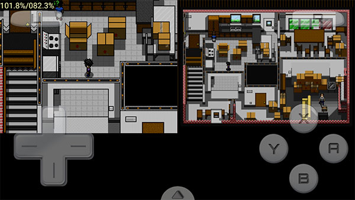

Drastic 快问快答——Android 上玩 NDS 必装模拟器
Drastic 是什么、怎么装、虚拟方向键怎么调、滤波选什么、存档消失怎么办——7 个问答讲清这款 NDS 模拟器的关键玩法和坑点。
整理一篇关于 Drastic 的快问快答——Android 上最火的 NDS 模拟器，从零开始帮你快速上手。
一句话说清 Drastic 是什么？谁需要装？
Drastic 是 Android 平台上最成熟的 Nintendo DS 模拟器，性能好、兼容性高、虚拟按键可调、支持即时存档，它的官网上有完整的功能说明。需要装的人只有一种：想在手机上玩 NDS 游戏的人——口袋妖怪、任天狗、马里奥赛车、Jump Super Stars……上千款 NDS 独占游戏，只有 Drastic 能流畅跑。iOS 用户不用看，Drastic 没有上架 App Store。
安装包从哪里拿？
安装包从官方下载渠道直接拿就行，认准正版包。安装好以后，ROM 需要你自己准备——Drastic 本身不带任何游戏。把 .nds 文件放到手机任意目录，在 Drastic 里打开就能跑。
虚拟方向键的"对角锁定"是什么？为什么格斗游戏玩家必开？
NDS 原生十字键是纯 4 向输入，但 Drastic 默认给虚拟方向键开了 8 向——手指按到方向键的角落会触发对角方向。对 RPG 和平台跳跃游戏来说这反而更方便，但格斗游戏的出招表对方向精度要求极高——"下前+拳"不小心按成"右下前+拳"，可能触发完全不同的技能。
对角锁定关掉 8 向，只认纯正/纯下/纯左/纯右。入口在 Options → Virtual Gamepad Settings → No diagonal input for on-screen D-Pad。如果某些游戏需要锁、某些不需要，可以进游戏后分别设置再 Save，Drastic 会按游戏记住独立配置。搭配 D-Pad touch region modifier 扩大触控区域（1.0-2.0），按方向键更稳。
图像滤波选 None / Linear / HQ2x 哪个？
先说一个事实：NDS 原生屏幕只有 256 × 192 像素，放到 1080P 手机上直接放大就是一堆大方块——这不是游戏本身的问题，是缩放算法的问题。滤波的作用就是在放大过程中做插值填充，让过渡自然。
三个模式的取舍很简单：手机是骁龙 8 系列 / 天玑 8000 以上的中高端芯片，直接开 HQ2x——算法精细、线条清晰、计算量在现代 GPU 上基本可以忽略。老机型或帧率吃紧时用 Linear——开销极低，效果是把像素硬边缘柔和化，够用。None 只在追求原汁原味像素感、或者设备实在太老时才考虑。
开了高分辨率 3D 渲染的话，配合 HQ2x 效果最好；极少数游戏的纹理和某些滤波算法有冲突，如果遇到花屏闪屏先把滤波关掉排查。

麦克风什么时候用？Fake mic 是什么？
大部分 NDS 游戏完全不需要麦克风——关掉能省电量和 CPU。只有玩《任天狗》（要吹气或说话）、《WarioWare: Touched!》（特定关卡吹气）、《宝可梦 黑/白》（语音训练家）这类用到 NDS 麦克风的游戏才需要开。
灵敏度在 Options → Audio → Microphone Level 调节，范围 0.0 - 2.0，默认 1.0。进游戏后正常吹一口气试试，没反应就往上调，环境噪音乱触发就往下调。
如果你不想对着手机吹（用手柄、环境吵、嫌尴尬），Drastic 有个 Fake mic input——映射到特殊按钮或手柄按键，按一下直接触发"吹气"信号，不需要物理麦克风。
存档突然消失了怎么办？Drastic 会删存档吗？
后来翻了drastic文档里的官方 FAQ 才确认：Drastic 不应该会主动删存档。已报告的所有存档消失案例，都是其他 App 导致的。头号元凶是手机清理/加速 App（手机管家、360、猎豹清理大师）——它们扫描大文件时会把 savestates/ 目录里的 .dsv 文件当成垃圾删掉，约 80% 的案例都是这个原因。
其次是 Android 系统设置里不小心点了"清除 Drastic 数据"——存档、即时档、皮肤、Lua 脚本全清。还有高级设置里那个"把存档嵌进即时档"的选项，口袋妖怪这类游戏开了可能导致存档损坏。
防存档消失的最稳做法：定期把 savestates/ 目录复制到电脑或云端备份。重要存档在 Manage Savestates 里手动 Upload 到 Google Drive 双保险。
值不值得长期装？
值得——Android 上玩 NDS 游戏 Drastic 是唯一正解，性能、兼容性、功能都没有对手。装上以后不需要频繁折腾设置，调好一次就能用很久。这次整理的问答素材同步在了三个仓库，GitHub上是主目录，Gitee和GitCode各留一份方便国内用户直接访问。